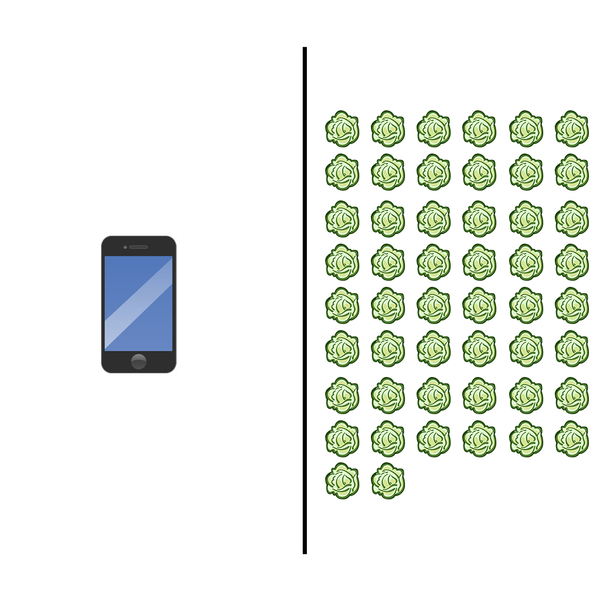

Wir recyclen unsere alten Materialien um neuen Platz zu schaffen.
mehr
Im Jahr 2018 wurden in Deutschland etwa 853.124 Tonnen Elektroaltgeräte gesammelt. Der weit überwiegende Teil waren Altgeräte aus privaten Haushalten.
Eine ordnungsgemäße Entsorgung von Elektroaltgeräten – also solchen Elektrogeräten, die bereits Abfall geworden sind – vermeidet eine Gefährdung der Umwelt und ermöglicht das Recyceln von Wertstoffen.
Europaweit ist das Sammeln und Recyclen von Elektroaltgeräten durch die EU vorgeschrieben.
Des weiteren gibt es viele lokale Unternehmen die Geräte, die weggeworfen würden, sammeln, aufbereiten und an bedürftige Familien oder Schulen weitergeben.
Quelle: Umwelt Bundesamt

Wir sähen aus und bleiben in Kontakt - Damit Sie nie mehr etwas verpassen!
mehr
Soziale Medien haben es einfacher denn je gemacht, sich darüber zu informieren, was online wie auch offline vor sich geht. Das bietet das Potential soziale Aktivitäten zu finden, an welchen man sich beteiligen könnte. Außerdem bieten diese sozialen Ressourcen eine Vielzahl von Interaktionsmöglichkeiten. Der Nachteil hiervon ist, dass einem das Gefühl gegeben wird, dass mehr geschieht als man verfolgen kann. Diese Doppelnatur von Social Media führt zu der „Fear of Missing Out“ – im Volksmund als FoMO bezeichnet.
Diese Angst beschreibt die allgegenwärtige Befürchtung, dass andere etwas erleben oder machen, von dem man nichts mitbekommt.
FoMO zeichnet sich durch den Wunsch aus ständig mit dem in Verbindung zu bleiben, was Andere tun.
Der hierdurch aufgebaute Druck kann – vor allem bei jungen Nutzern von Social Media – zu psychischen Problemen führen.
Quelle: Paper: Computers in Human Behavior

Hauptsache grün uns schön - Wasser gibt es ja eh genug!
mehr
Was kann mit 12.760 Liter Wasser gemacht werden?
Entweder ein Smartphone herstellen oder 50 Kilo Salat produzieren.

Quelle: Wasser für Lebensmittel, Wasser für Smartphones